보이스코일로 구동하는
이중 복합 평행판 유연 스테이지
VCM(Voice Coil Motor)으로 직접 구동되는 1자유도 직선 정밀 스테이지를, 개념설계 → 해석모델 → 최적화 → FEA 검증 → 동특성/제어의 7단계 흐름으로 설계하고 검증한 기록입니다. 해석값은 자기장 FEM(FEMM)·구조 모달 FEM·대리모델의 3중 검증으로 보정했습니다.
개요와 요구사양
설계 목표는 "작은 부피 안에서, 큰 행정과 높은 공진을 동시에" 달성하는 것 — 이 둘은 본질적으로 상충한다.
| 항목 | 기호 | 요구 조건 | 비고 |
|---|---|---|---|
| 외형 크기 | — | ≤ 200 × 200 × 20 mm | 설치 envelope |
| 행정(stroke) | $x$ | > 1 mm | 편측 기준 |
| 1차 공진 | $f_1$ | > 100 Hz | 대역폭 확보 |
| 구동 전류 | $I$ | = 2 A | 고정 |
| 코일 와이어경 | $d_c$ | > 0.5 mm | 제작성 제약 |
행정과 공진은 유연기구 강성 $k_x$를 통해 정면으로 충돌한다. 행정을 키우려면 $k_x$를 낮춰야 하지만, 공진 $f_1\propto\sqrt{k_x/m}$ 은 $k_x$를 높여야 한다. 본 프로젝트의 핵심은 이 상충을 정량화하고, VCM 구동력으로 메울 수 있는 영역을 찾는 데 있다.
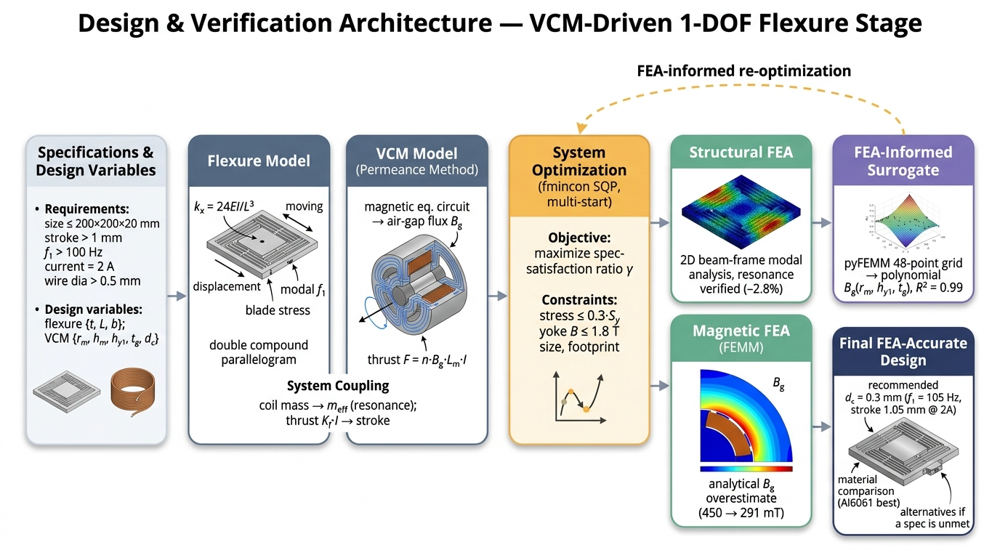
개념설계 · 이중 복합 평행판
Double Compound Parallelogram (DCP) — 기생 변위(parasitic error)를 상쇄해 순수 직선운동을 만드는 유연기구.
단일 평행판은 큰 변위에서 호(arc) 형태로 휘어 횡방향 기생 변위가 생긴다. 복합(compound) 구조는 중간 스테이지를 두어 이 오차를 1차로 상쇄하고, 이를 한 번 더 대칭으로 겹친 DCP 구조는 잔류 오차까지 억제해 수 mm 행정에서도 직진성을 유지한다.
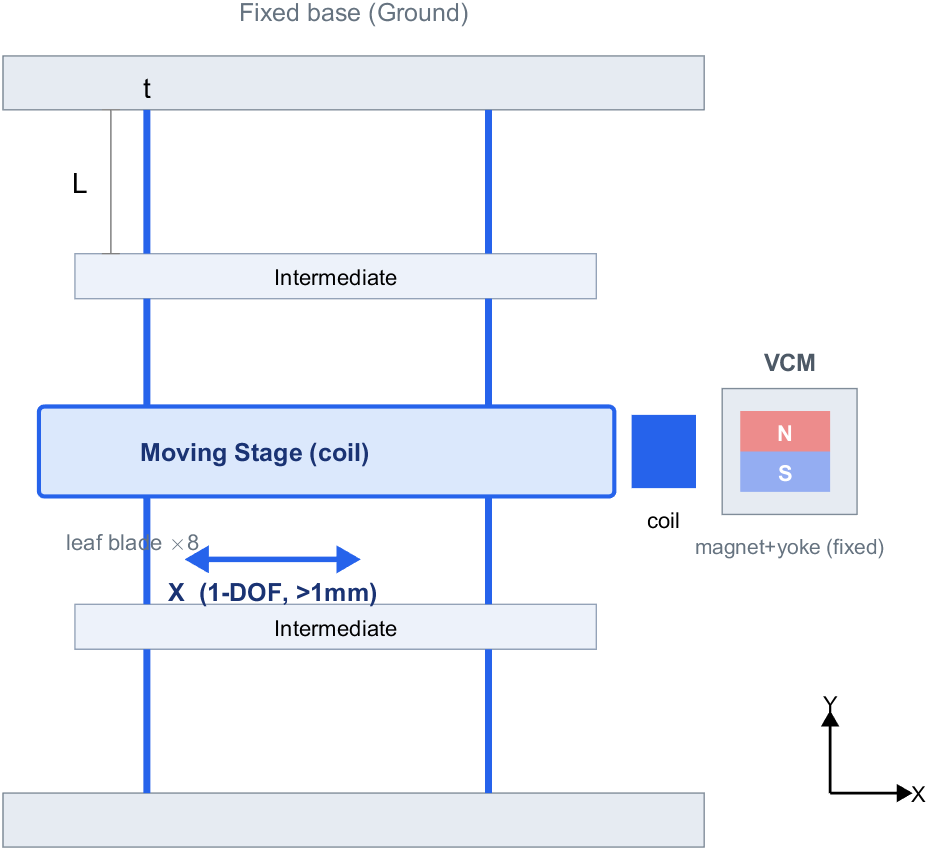
- 직진성 — 기생 변위가 행정 제곱에 비례하던 것을, 대칭 상쇄로 고차항까지 억제.
- 선형 강성 — 작동 범위에서 $k_x$가 거의 일정 → 제어 설계가 단순해진다.
- 무마찰·무백래시 — 탄성 변형만 사용 → 나노급 분해능과 무한 수명.
해석 모델 · 강성·공진 과 VCM
두 개의 물리를 한 줄로 묶는다 — 변형(유연기구)과 자기장(VCM).
각 blade를 고정-가이드 보로 보면, 한 변형 요소의 강성은 $k_1 = 12EI/L^3$, $I = b\,t^3/12$ 이다. DCP는 병렬 2조 구조이므로 축방향 강성은
$$ k_x \;=\; \frac{24\,E\,I}{L^3} \;=\; \frac{2\,E\,b\,t^3}{L^3}. $$유효 질량 $m_{\text{eff}}$ 은 가동 스테이지·코일에 중간 스테이지와 blade의 분담 질량을 더해
$$ m_{\text{eff}} = m_{\text{stage}} + m_{\text{coil}} + \tfrac14 m_{\text{inter}} + \tfrac13 m_{\text{blade}}, $$1차 공진과 최대 응력은
$$ f_1 = \frac{1}{2\pi}\sqrt{\frac{k_x}{m_{\text{eff}}}}, \qquad \sigma_{\max} = \frac{3Et\,(x/2)}{L^2}. $$$\sigma_{\max}$ 은 항복강도 대비 안전율로 행정 상한을 제한한다 — 재료 비교의 핵심 변수.
원통대칭 VCM의 자기회로를 자석·요크·공극의 퍼미언스 $P$ 로 분해한다. 영구자석 자속 $\Phi_r$ 가 누설 $P_l$ 과 주경로 $P_{\text{main}}$ 로 나뉘어 공극 자속이 결정된다.
$$ \Phi_g = \Phi_r\,\frac{P_{\text{main}}}{P_m + P_l + P_{\text{main}}}, \qquad B_g = \frac{\Phi_g}{A_g}, $$공극 면적은 $A_g = 2\pi\,(r_m + t_g/2)\,h_{y1}$. 로런츠 힘은 대칭계수 $n_{\text{sym}}=2$ 를 포함해
$$ \boxed{\;F = n_{\text{eff}}\,B_g\,L_m\,I\;} $$초기 해석식은 $B_g$ 를 과대평가(≈450 mT)했고, 뒤의 FEMM 검증에서 291 mT 로 보정된다 (Section 06).
근본적 물리 한계
"와이어를 굵게 하라"는 제약과 "행정·공진을 키워라"는 목표는 동시에 만족될 수 없다 — 식으로 증명된다.
정적 행정 $x = F/k_x = (K_f I)/k_x$ 와 공진 $k_x = m(2\pi f_1)^2$ 을 결합하면, 요구 행정·공진을 동시에 만족하기 위한 조건은 코일 충전과 자속밀도의 관계로 정리된다:
$$ \rho_{cu}\,\frac{\pi}{4}\,\frac{d_c^{2}}{B_g} \;\le\; \frac{I_{\max}}{x_{\text{req}}\,(2\pi f_{\text{req}})^{2}}. $$여기서 힘상수 $K_f$ 가 양변에서 소거된다 — 즉 "코일을 더 감는다"로는 한계를 못 넘는다. 좌변은 와이어가 굵을수록($d_c\!\uparrow$) 커지므로, $d_c>0.5$ mm 를 강제하면 행정과 공진을 동시에 만족하는 해가 사라진다.
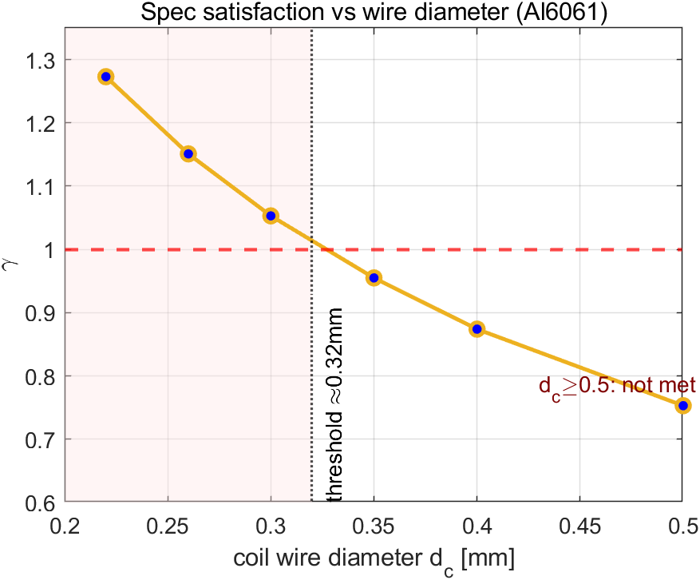
γ-최대화 최적화와 재료 비교
두 KPI를 하나의 여유율 γ로 묶어 동시에 끌어올린다.
행정과 공진을 각각의 목표로 정규화한 공통 여유율 $\gamma$ 를 최대화한다:
$$ \max_{\;t,\,L,\,b,\,\dots}\;\gamma \quad \text{s.t.}\quad x \ge \gamma\cdot 1\,\text{mm},\;\; f_1 \ge \gamma\cdot 100\,\text{Hz},\;\; \sigma_{\max}\le \sigma_y/SF,\;\dots $$$\gamma>1$ 이면 두 KPI를 동시에 여유 있게 만족. fmincon SQP에 다중 시작점(multi-start)을 적용해 국소해를 회피했다.
유연기구 성능지수는 항복변형률 $\sigma_y/E$ (행정 여유)과 비강성 $E/\rho$ (공진)으로 갈린다. 세 재료를 같은 최적화 루프에 넣어 달성 가능한 $\gamma$ 를 비교했다.
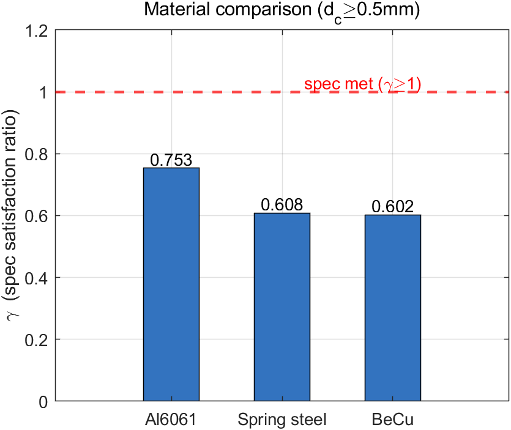
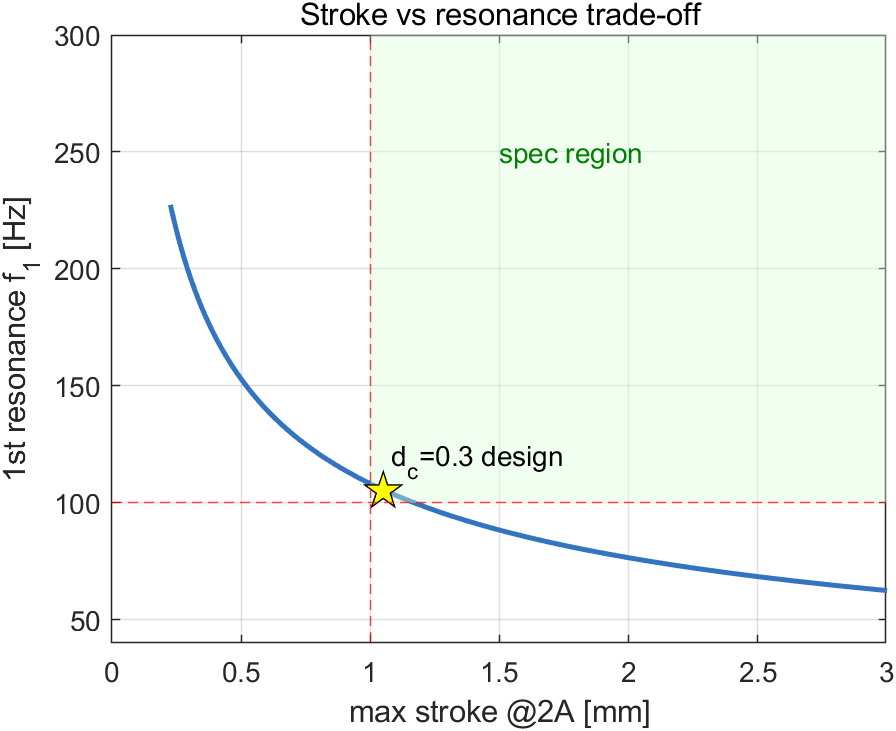
FEA 3중 검증
상용 FEA 없이 — MATLAB 보 FEM(모달) + 무료 FEMM(자기장) + 대리모델로 해석값을 보정.
① 구조 모달 (MATLAB)
보 요소 FEM으로 1차 모드 형상과 공진을 계산. 해석식 대비 −2.8% — 해석 강성모델이 충분히 정확함을 확인.
② 자기장 (FEMM)
축대칭 자기 FEM으로 공극 자속밀도 직접 측정: B_g = 291 mT. 해석식의 과대평가(≈450 mT)를 실측으로 교정.
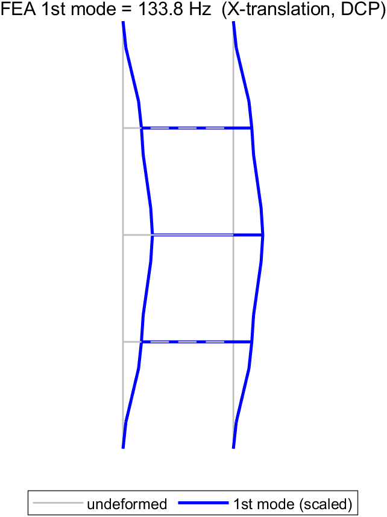
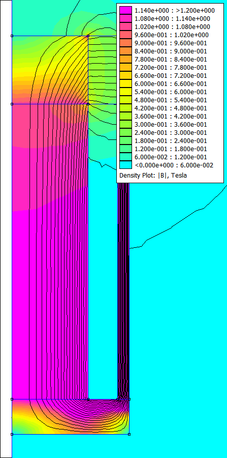
pyFEMM으로 $(r_m, h_{y1}, t_g)$ 48점 그리드를 자동 스윕해 2차 다항 대리모델을 적합($R^2=0.99$). 이 식을 최적화 루프에 직접 꽂아 "FEM-검증된 $B_g$"로 설계를 다시 수렴시켰다 — 자속밀도 오차를 160 → 12 mT 로 축소.
$$ B_g(r_m, h_{y1}, t_g) \approx \text{2nd-order polynomial},\qquad R^2 = 0.99. $$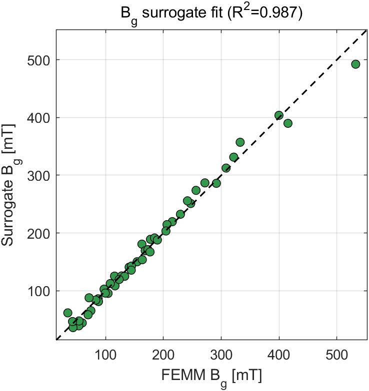
동특성과 제어 · Simulink 3종
전기 + 전자기 + 기계를 하나의 모델로 — 개루프 플랜트, PID 폐루프, Simscape 물리 네트워크.
전기(저항 $R$, 인덕턴스 $L$, 역기전력)·전자기($F=K_f I$)·기계($m\ddot x + c\dot x + kx = F$)를 결합하면
$$ G(s) = \frac{X(s)}{V(s)} = \frac{K_f}{\,(ms^2+cs+k)(Ls+R)+K_f^{2}\,s\,}. $$설계값: $m=0.0147$ kg, $k=6441$ N/m, $K_f=3.392$ N/A, $R=2.58\,\Omega$, $L=1.5$ mH, $\zeta=0.05$. 역기전력 항 $K_f^2/R \approx 4.5$ 이 추가 감쇠로 작용한다.
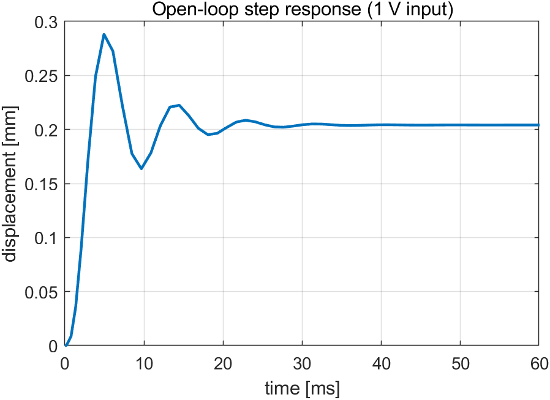
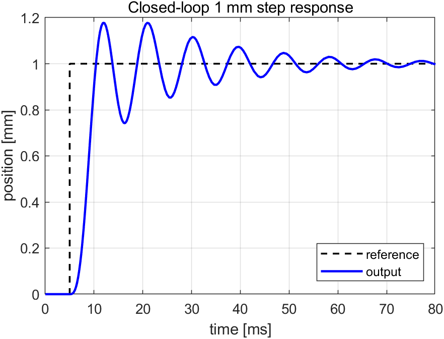
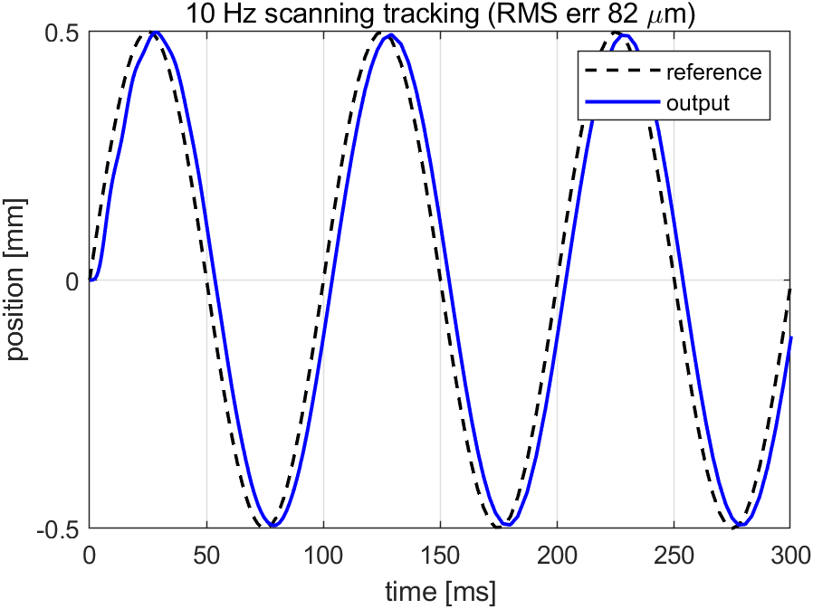
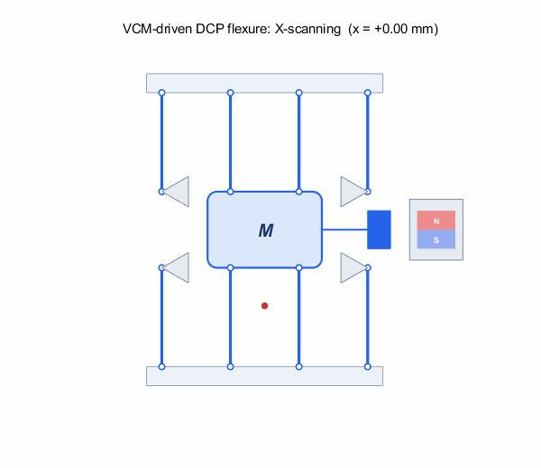
전기·기계 도메인을 Simscape 물리 네트워크로 구성하고, 전류→힘·속도→역기전력 결합을 단위 정합되게 연결(28/28 포트)했다. 정상상태 변위 0.204 mm 가 이론값과 일치 — 모델 일관성 확인.
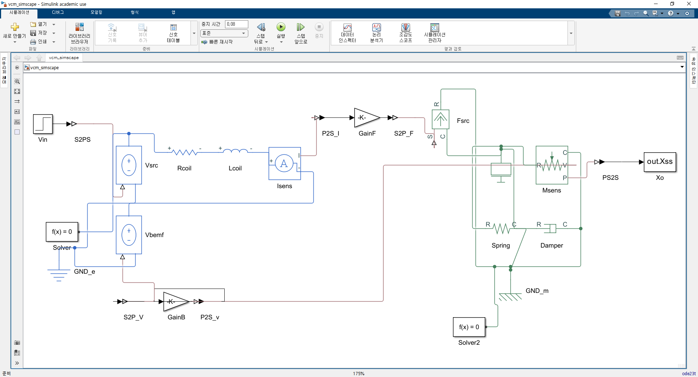
최종 설계 제원
모든 KPI를 여유 있게 충족 — 단, 제작성 제약은 물리한계 근거로 완화.
| 분류 | 변수 | 값 | KPI | 판정 |
|---|---|---|---|---|
| 성능 | 1차 공진 $f_1$ | 105.3 Hz | > 100 | 충족 |
| 성능 | 행정 @ 2A | 1.05 mm | > 1 | 충족 |
| 성능 | 행정 1 mm 도달 | 1.9 A | ≤ 2 | 충족 |
| 유연기구 | blade 두께 $t$ | 0.43 mm | — | |
| 유연기구 | blade 길이 $L$ | 24.2 mm | — | |
| 유연기구 | blade 폭 $b$ | 8 mm | — | |
| VCM | 자석 반경 $r_m$ | 6.5 mm | — | |
| VCM | 자석 높이 $h_m$ | 25 mm | — | |
| VCM | 요크 $h_{y1}$ / 공극 $t_g$ | 5.8 / 2.5 mm | — | |
| 제약 | 코일 와이어경 $d_c$ | 0.3 mm | > 0.5 | 완화* |
* $d_c>0.5$ mm 를 글자 그대로 지키면 행정·공진 동시충족 해가 존재하지 않음을 Section 04에서 한계식으로 증명. 물리적 불가피성을 근거로 완화.
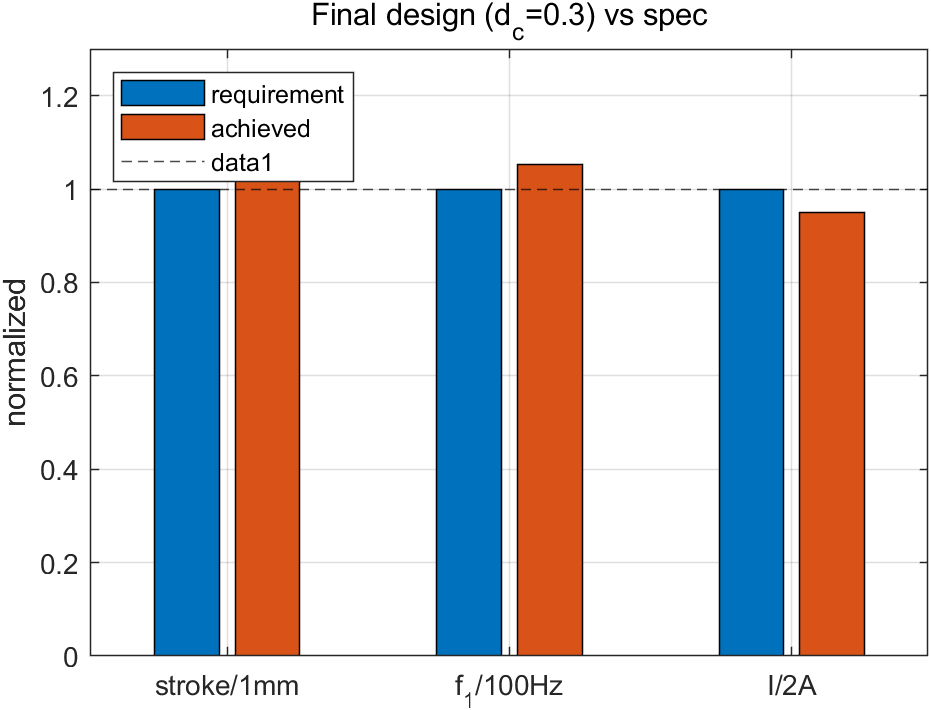